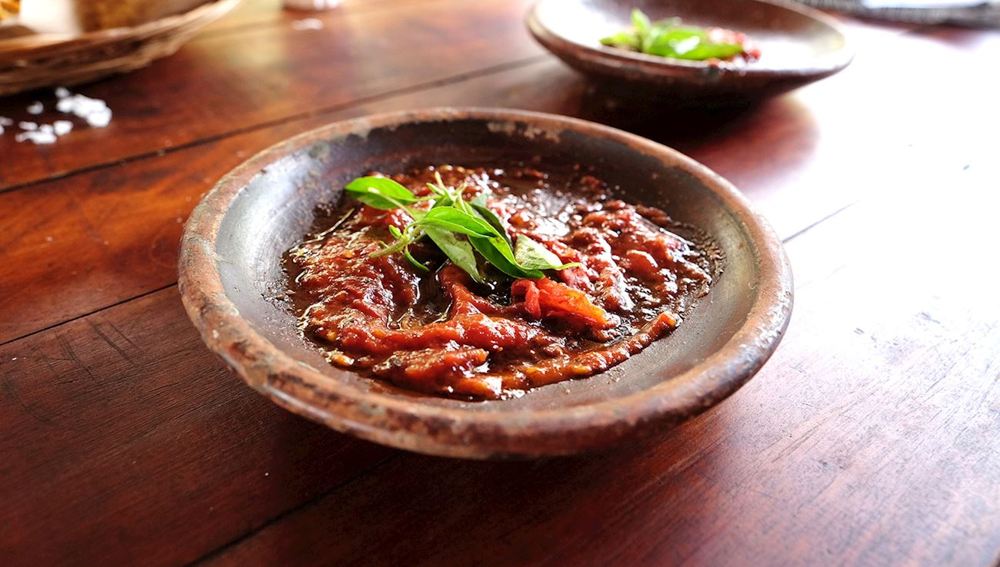

Home
Sambal Terasi

Description
Sambal terasi is an Indonesian chili paste made primarily from fresh red
chilies and fermented shrimp paste known as terasi. It is one of the most
common and widely used sambals across Indonesia and serves as a versatile
condiment that accompanies a variety of dishes, from fried fish and
vegetables to rice and tofu.
The key ingredient, terasi, is made from ground, salted, and fermented
small shrimp that is sun-dried and either formed into blocks or sold
loose. Before being used in sambal, terasi is typically toasted or fried
to reduce its strong odor and enhance its umami flavor.
Ingredients
- 15 cayenne peppers
- 9 large red chili peppers
- 5 bulbs red Asian shallot
- 2 cloves garlic
- 2 tsp terasi (shrimp paste)
- 1 tbsp palm sugar (red sugar)
- 1/2 tsp salt
- cooking oil, for sautéing
Steps
-
Clean the peppers, cut them into smaller pieces, and fry in cooking oil
until wilted. Set aside.
-
Peel and chop the onion and garlic, sauté in hot oil, and set aside.
-
Place the peppers, onion, garlic, salt, and sugar in a mortar and grind.
Alternatively, you can also use a food processor.
- Add shrimp paste and grind or process until smooth.
- Serve immediately.